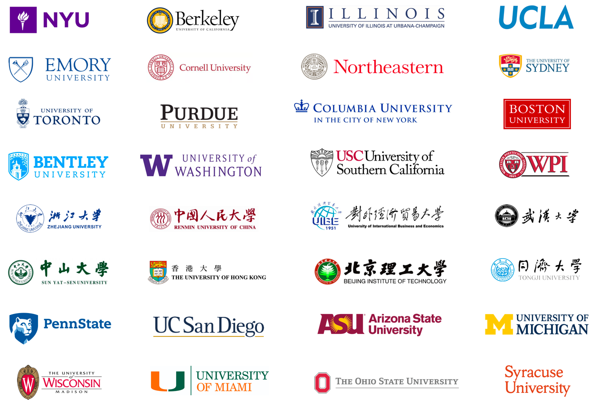

Students Feedback
Students Said
The Background Enhancement Program (BEP) from I-intern career consulting platform is like our youth —— full of challenges, successes, and frustrations, but also warm and reliable. I applied for the master program in my dream school New York University. During the interview, the admission officer was very interested in my BEP internship experience from I-intern. I talked with him about my internship experience, and shared my ideas about some real-world marketing campaigns I did in this BEP internship. This interview was really successful and I finally got the offer from NYU because of the BEP internship. Furthermore, it helped me get a better understanding of my future career path.
Kathy
I am an undergraduate student at Emory University. I had internship experience in Tencent and Vanke, but I still felt that I didn’t have enough practical experience and there was a room for my improvement. At this point, my friend gave me the business card of the I-intern internship platform. The career mentor from I-intern answered all of my questions helpfully. According to my situation, She immediately provided the corresponding help. I successfully found the investment bank internship on Wall Street, and moved from Atlanta to New York. When I arrived in New York, it was quite cool to work in the Trump Building every day. The program is a high-end internship program, and the content is very fulfilling and satisfying every day. These days manager was considering to give me return offer, and hopefully I will work here after graduation. There’s a Chinese Idiom saying “ there are numerous talents out there but few wise headhunters”, and I want to say, it’s so hard but important to meet your wise headhunter.

Yvonne
I am a student in the University of the Arts in San Francisco majoring in media. I applied for an internship at a Hollywood media company and got the offer after consulting and training at I-intern. During this two month’s internship, I made a promotional film, and edited the script by myself. I felt that working is totally different from school life, since my working schedule was very tight and manager always pushed me to do a lot. With the recommendation letter from this internship, I got another internship for Stan Lee's new film production team at LA Hollywood this summer! I don't want to use an exaggerated tone to describe the effect of an internship program, but I really appreciate the internship for me to connect with the resources and bring me a brand new way of thinking. Thank I-intern so much!

Wonderlyle
I am from Columbia University and I will be graduating next year. Under the guidance of the I-intern mentors, I did my internship in a venture capital firm. This company was quite reliable. After two months of the financial analyst intern, I felt that there was really a gap between my school life and real-world practice. The internship in two months was like studying in two semesters, since I thought I really learnt a lot. I thought I understood a lot of business rules that I’ve never learned before. I’ve already finished this internship project. Also, I am now a trainee of asset management on Wall Street since I got the referral by this VC firm. In summary, I feel that networking and internship experience are really significant in the beginning of my career path. I am glad to choose I-intern Career Consulting Group. I will definitely recommend this platform to my friends.
YIBestrong
I am from UC Berkeley double majoring in Economic and CS. I tried to apply for an assistant job in asset allocation, but I failed since I did’t have any related internship experience before. Then I found I-intern career consulting platform referred by my friends, and mentors gave me a lot of guidance and helped me finally find a high quality internship. After this internship, I decided to apply for the assistant job again using my new recommendation letter and the updated resume containing I-intern's internship experience. And guess what! I got the offer this time!!! I talked with HR about my last internship experience, and she was impressed by it. What I want to say is that using I-intern platform is the smartest way I have ever chosen.
张阿阿
I have never tried to cooperate with my teammates, and I have never experienced the unique team culture of an investment firm. Also, I have never been exposed to high-intensity activities like elite business marketing game. I can only say that the business game and internship experience provided by I-intern internship platform is greatly beneficial for me. After going through all the aspects of the project with our teammates, we found that the most valuable thing is teamwork, and to be positively influenced by each other.
Leslie
Where Our Students From
